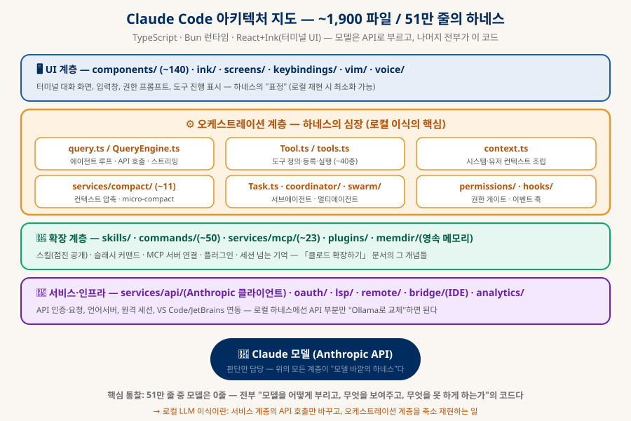
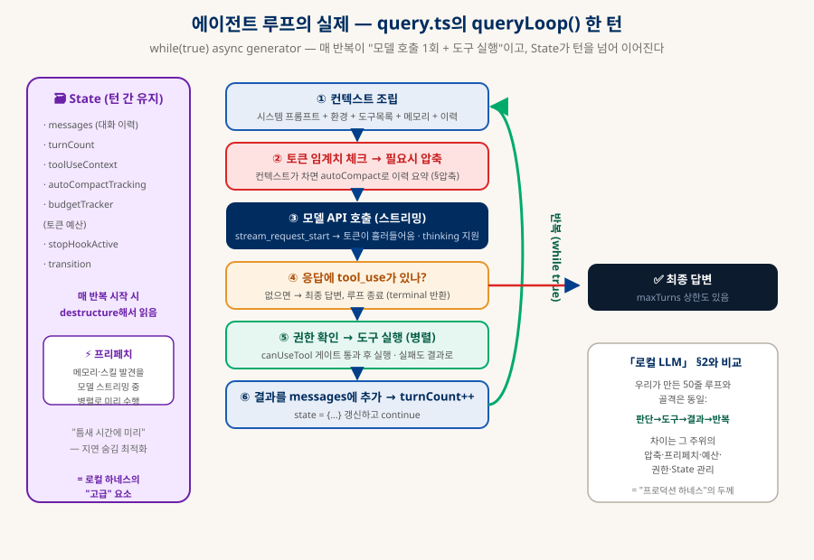
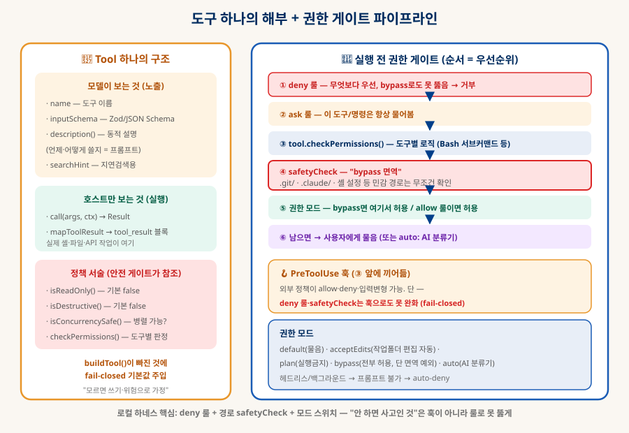
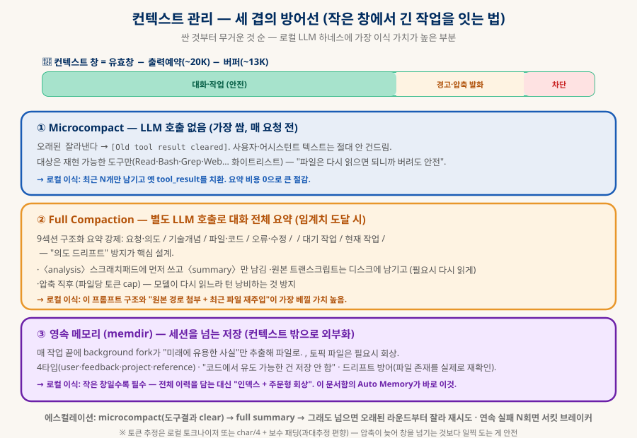
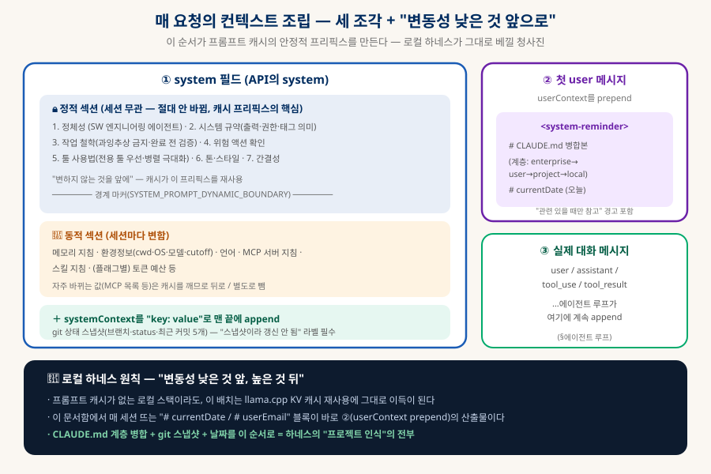
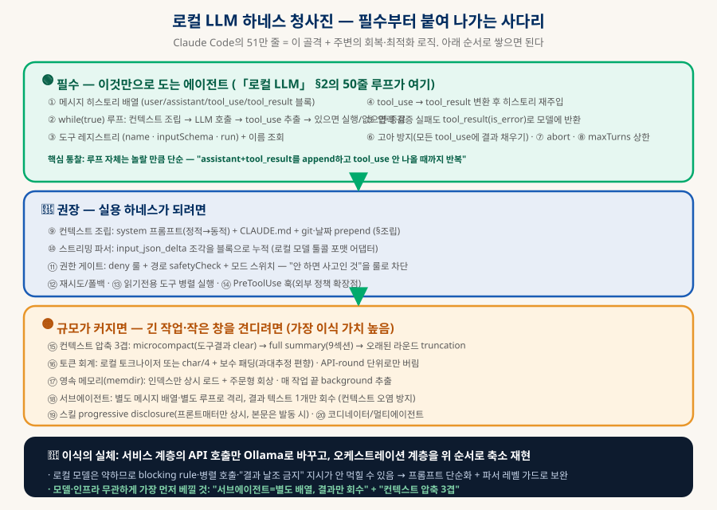

Claude Code 내부 해부
하네스는 어떻게 LLM을 부리는가 — 로컬 이식을 위한 청사진
2026년 유출된 Claude Code 소스(~1,900 파일 / 51만 줄)를 분석해, "모델을 어떻게 부리고, 무엇을 보여주고, 무엇을 못 하게 하는가"의 실제 구현을 해부한다. 에이전트 루프·도구·권한·컨텍스트 압축·메모리·서브에이전트를 구조 중심으로 정리하고, 로컬 LLM 하네스로 재현하는 사다리까지 — 「클로드 확장하기」의 개념이 여기서 소스로 검증된다.
0. 한눈에 보기 — 51만 줄 중 모델은 0줄
「클로드 확장하기」가 개념이었다면, 이 문서는 그 개념의 실제 소스 검증이다
이 문서는 2026년 3월 유출된 Claude Code CLI 소스(약 1,900개 파일, 51만+ 줄, TypeScript/Bun/Ink)를 하네스 관점으로 분석한 것이다. 핵심 통찰은 하나다 — 51만 줄 중 "모델"은 0줄이다. 모델(Claude)은 API 너머에 있고, 이 방대한 코드는 전부 "모델을 어떻게 부르고(에이전트 루프), 무엇을 보여주고(컨텍스트 조립), 무엇을 할 수 있게 하고(도구), 무엇을 못 하게 하고(권한), 창이 차면 어떻게 버티는가(압축)"의 구현이다. 「로컬 LLM 에이전트」·「클로드 확장하기」에서 다룬 하네스·루프 엔지니어링이 실제 프로덕션 소스로 어떻게 생겼는지를 확인하고, 그것을 로컬 LLM으로 축소 재현하는 청사진(§10)을 얻는 것이 목적이다.
대부분 하네스 코드
async generator (§2)
(§5) — 로컬 이식 핵심
(전부 "모델 바깥")
1. 아키텍처 지도 — 계층으로 보는 51만 줄
전체를 먼저 — 어디가 "모델을 부리는 심장"이고 어디가 로컬에서 버릴 부분인가

| 계층 | 대표 디렉토리 | 역할 — 로컬 이식 시 |
|---|---|---|
| 🖥 UI | components/(~140)·ink/·screens/·vim/·voice/ | 터미널 대화 화면·입력·진행 표시. 로컬은 최소화/생략 가능. |
| ⚙️ 오케스트레이션 | query.ts·Tool.ts·context.ts·compact/·Task.ts·permissions/ | 하네스의 심장. 이식의 핵심 — §2~8이 전부 여기. |
| 🧩 확장 | skills/·commands/(~50)·mcp/(~23)·plugins/·memdir/ | 스킬·커맨드·MCP·플러그인·영속 메모리. 「클로드 확장하기」의 그 개념들. |
| 🔌 서비스 | services/api/·oauth/·lsp/·remote/·bridge/ | API 인증·요청, IDE 연동 등. 여기의 API 호출만 Ollama로 교체. |
2. 에이전트 루프 — query.ts의 queryLoop()
놀랄 만큼 단순한 골격, 그리고 그 주위를 감싼 두꺼운 회복 로직
에이전트의 심장은 query.ts의 queryLoop()다 — 재귀가 아니라 하나의 async function*(async generator) 안의 while(true) 루프다. 각 반복이 "API 왕복 1회 + 그에 딸린 도구 실행"이고, 루프 상태는 State 객체 하나(messages·turnCount·toolUseContext·budgetTracker…)에 담겨 continue할 때마다 state = {...새 messages}로 갱신된다.

| 단계 | 실제 동작 (query.ts) |
|---|---|
| 종료 판정의 핵심 | 응답에 tool_use 블록이 있는가가 루프를 한 번 더 돌지 결정하는 유일한 신호. (주석에 "stop_reason==='tool_use'는 신뢰 불가라 블록 존재 여부로 직접 판단"이라 명시) |
| 결과 재주입 | 도구 결과는 전부 {type:'tool_result', tool_use_id, content, is_error?} 형태의 user 메시지로 변환돼 히스토리 뒤에 append → 그대로 다시 API로. 성공·실패·검증오류·중단 모두 같은 구조(is_error만 다름). |
| 고아 방지 | 모든 tool_use에는 대응 tool_result가 반드시 있어야 함(API 규약). 에러·중단·폴백 경로마다 yieldMissingToolResultBlocks()로 빈 결과를 채움 — 하네스에서 가장 흔히 터지는 400 에러 지점. |
| 병렬 도구 실행 | 연속된 읽기전용(concurrency-safe) 도구는 한 배치로 병렬(기본 상한 10), 그 외는 순차. 단 모델이 요청한 순서는 유지. |
| 종료 조건들 | tool_use 없음(완료)·abort·스톱훅 차단·maxTurns 초과·프롬프트 초과·모델 에러 — 전부 return {reason}으로 빠져나가며 이 reason이 최종 반환값. |
하네스에 필요한 것: 메시지 히스토리 배열 · while 루프 · tool_use 추출 · tool_result 변환·재주입 · 입력검증 실패도 결과로 반환 · 고아 방지 · abort · maxTurns 상한. (§10에 우선순위 정리.)
3. 도구 시스템 — 노출·실행·정책의 분리
도구 하나가 담는 것, 그리고 40여 종을 다루는 법
모든 도구는 Tool.ts의 Tool<Input,Output> 타입으로 정의되며, 모델에게 노출되는 부분과 실제 실행 부분, 그리고 안전 정책이 필드로 분리돼 있다. buildTool() 팩토리가 누락된 메서드에 fail-closed 기본값(읽기전용 아님·파괴적 아님으로 가정)을 채운다 — "모르면 위험한 쪽으로"가 설계 원칙이다.

| 구성 | 내용 |
|---|---|
| 모델 노출 | name · inputSchema(Zod→JSON Schema) · description()(권한·다른 도구 목록을 받아 동적으로 생성 — 설명이 곧 프롬프트) · searchHint. |
| 실행 (호스트만) | call(args, ctx, canUseTool, onProgress) → ToolResult. 결과를 mapToolResultToToolResultBlockParam으로 API 형식 변환. 실제 셸·파일·API 작업이 여기. |
| 정책 서술 | isReadOnly·isDestructive·isConcurrencySafe·checkPermissions — 안전 게이트와 병렬 판정이 참조. |
| 지연 로딩 | 도구가 많으면(특히 MCP 다수) shouldDefer로 이름만 노출하고, 모델이 ToolSearch로 검색해야 실제 스키마가 로드됨(tool_reference 블록). 토큰 폭발 방지. |
| MCP 통합 | 외부 MCP 서버의 tools/list를 받아 mcp__server__tool 이름으로 래핑, 서버가 준 JSON Schema를 그대로 사용. 도구 힌트(readOnlyHint 등)로 안전 분류 파생. |
4. 권한·훅·안전 게이트 — "안 하면 사고인 것"을 막는 법
도구 실행 전, 순서가 곧 우선순위인 6단계 파이프라인
모든 도구 실행 전 hasPermissionsToUseTool이 순서가 곧 우선순위인 파이프라인을 통과시킨다. 결과는 allow / deny / ask 셋. 위 도식(§3)의 오른쪽이 이 흐름이다:
| 단계 | 판정 |
|---|---|
| ① deny 룰 | 도구/명령이 거부 목록이면 즉시 거부 — 무엇보다 우선, bypass로도 못 뚫음. |
| ② ask 룰 | 항상 물어봐야 하는 도구/명령. |
| ③ 도구별 checkPermissions | Bash 서브커맨드처럼 도구 고유 로직(명령을 AST로 파싱해 서브커맨드별 판정). |
| ④ safetyCheck (bypass 면역) | .git/·.claude/·셸 설정 등 민감 경로 쓰기는 bypass·훅 allow를 모두 무시하고 반드시 확인 — 최후의 안전선. |
| ⑤ 권한 모드 | bypass면 여기서 허용 / allow 룰이면 허용. |
| ⑥ 남으면 | 사용자에게 물음. (무인 auto 모드면 별도 AI 분류기가 위험 판정 + 연속 거부 한도 + fail-closed 폴백.) |
훅(Hooks)은 28종 이벤트(PreToolUse·PostToolUse·SessionStart·Stop·PreCompact…)에 걸리며, PreToolUse 훅은 ③ 앞에 끼어들어 allow·deny·입력변형을 할 수 있다. 결정적 규칙: 훅은 권한을 완화할 수 있지만, deny 룰과 safetyCheck는 훅으로도 못 뚫는다(resolveHookPermissionDecision이 훅 allow 후에도 deny 룰을 재확인). 훅은 셸/HTTP/LLM/에이전트 형이 있고, 셸 훅은 stdin JSON → stdout/exit로 응답한다.
5. 컨텍스트 관리·압축 — 작은 창에서 긴 작업을 잇는 법
로컬 LLM 하네스에 가장 이식 가치가 높은 부분
컨텍스트 압력을 세 겹으로, 싼 것부터 다룬다. 로컬 모델은 컨텍스트가 작으므로 이 부분이 특히 중요하다. 임계치는 유효창 = 컨텍스트창 − 출력예약(~20K) − 버퍼(~13K) 공식으로 잡고, 매 턴 토큰을 재서 넘으면 발화한다.

| 방어선 | 메커니즘 |
|---|---|
| ① Microcompact | LLM 호출 없음. 오래된 tool_result만 잘라냄(재현 가능한 도구 화이트리스트: Read·Bash·Grep·Web…). 사용자·어시스턴트 텍스트는 절대 안 건드림. 매 요청 전 실행하는 저비용 축소. |
| ② Full Compaction | 별도 LLM 호출로 대화 전체를 9섹션 구조화 요약. 핵심 설계: (a) <analysis> 스크래치패드 후 <summary>만 남김, (b) "모든 사용자 메시지"와 "다음 단계를 직전 작업 그대로 인용"으로 의도 드리프트 방지, (c) 원본 트랜스크립트를 디스크에 남기고 경로를 첨부, (d) 압축 직후 최근 읽은 파일 top-N 재주입. |
| ③ 영속 메모리 | 세션을 넘는 파일 저장(§6). 인덱스만 상시 로드 + 주문형 회상. |
| 토큰 추정 | 정확한 API 카운트를 쓰되 불가하면 char/4 rough estimate + 보수 패딩(과대추정 편향). 이미지/문서는 고정값(2000)으로 과대추정 방어. "압축이 늦어 창을 넘기는 것보다 일찍 도는 게 안전." |
| 서킷 브레이커 | 연속 압축 실패 N회(기본 3)면 중단 — 회복 불가 세션이 매 턴 API를 두들기는 사고 방지(주석에 실제 사고 기록 있음). |
6. 영속 메모리 (memdir) — 컨텍스트 밖으로 외부화
작은 창일수록 필수 — 전체 이력 대신 "인덱스 + 주문형 회상"
~/.claude/projects/<프로젝트>/memory/ 디렉토리 기반의 파일 메모리다. MEMORY.md(인덱스)만 항상 시스템 프롬프트에 로드(최대 200줄/25KB, 한 줄 포인터만), 실제 내용은 주제별 토픽 파일에 두고 필요할 때 회상한다. 이 지식 베이스의 Auto Memory가 바로 이 메커니즘이다.
| 요소 | 내용 |
|---|---|
| 4-타입 분류 | user(사용자 역할·선호) · feedback(작업 방식 지시, Why/How 구조) · project(코드에서 유도 불가한 결정·사정) · reference(외부 시스템 포인터). |
| 저장 안 하는 것 | 코드에서 유도 가능한 것(패턴·경로·아키텍처), git 히스토리, 디버깅 레시피, CLAUDE.md에 이미 있는 것, 일시적 작업 상태. |
| 자동 추출 | 매 작업 끝(모델이 도구 없이 최종 응답할 때) background fork로 "미래에 유용한 사실"만 추출. read-only Bash + auto-memory 경로 내 쓰기만 허용. 커서 기반 증분. |
| 회상 | MEMORY.md에 없는 토픽은 필요시 작은 모델이 relevance 선택(매니페스트 주고 "확실히 유용할 파일 최대 5개"). |
| 드리프트 방어 | "메모리가 파일/함수를 언급해도 그건 작성 시점의 주장일 뿐" — 추천 전 실제 존재를 grep/확인하도록 지시. |
7. 서브에이전트·멀티에이전트 — 결과만 회수하는 격리
컨텍스트 오염 방지의 실제 구현 — 모델·인프라 무관하게 가장 먼저 베낄 것
무거운 작업은 AgentTool로 별도 컨텍스트의 서브에이전트에 위임한다. 핵심은 runAgent.ts — 서브에이전트는 자체 메시지 배열·자체 query 루프로 격리 실행되고, 부모는 전체 transcript를 보지 않고 마지막 텍스트 메시지 하나만 도구 결과로 회수한다. transcript는 디스크에만 저장된다("The result is not visible to the user, transcript recorded to sidechain").
| 개념 | 내용 |
|---|---|
| fresh vs fork | subagent_type 지정 = fresh(빈 컨텍스트 — 프롬프트에 배경을 다 넣어야) · 생략 = fork(부모 컨텍스트+캐시 상속, 도구 노이즈만 격리). |
| 병렬 | 한 assistant 응답에 여러 tool_use → 동시 실행. run_in_background면 백그라운드 태스크로 돌고 완료 시 알림 메시지 주입(폴링 금지). |
| 토큰 절약 | 읽기전용 탐색 에이전트(Explore/Plan)는 CLAUDE.md·git status를 빼서 토큰 절약(주석: "34M+ Explore 스폰에서 주당 5-15 Gtok 절감"). |
| 내장 에이전트 | general-purpose·explore(읽기전용 탐색)·plan·verification(적대적 검증, PASS/FAIL 판정)·claude-code-guide 등. 각자 툴 allow/deny·모델·권한모드를 프론트매터로. |
| coordinator/swarm | 메인을 오케스트레이터로 바꿔 직접 편집 대신 워커 스폰/계속(SendMessage)/중지만. 원칙: "understanding은 위임 금지 — 파일:라인 담은 spec을 직접 작성해 전달." swarm은 같은 프로세스 내 팀원들이 서로 대화. |
8. 컨텍스트 조립 — 매 요청의 세 조각
"변동성 낮은 것 앞, 높은 것 뒤" — 캐시 프리픽스의 청사진
매 API 요청은 세 조각으로 조립된다. 이 순서가 프롬프트 캐시의 안정적 프리픽스를 만들고, 로컬 하네스가 그대로 베낄 청사진이다(캐시가 없어도 llama.cpp KV 재사용에 이득).

| 조각 | 내용 |
|---|---|
| ① system 필드 | 정적 섹션(정체성 → 시스템 규약 → 작업 철학 → 위험 액션 → 툴 사용 → 톤 → 간결성 — 세션 무관, 절대 안 바뀜) → 경계 마커 → 동적 섹션(메모리·환경정보·MCP 지침·스킬 지침) → 끝에 systemContext를 "key:value"로 append(git 상태 스냅샷, "갱신 안 됨" 라벨 필수). |
| ② 첫 user 메시지 | <system-reminder>로 감싼 userContext — CLAUDE.md 계층 병합본(enterprise→user→project→local) + 오늘 날짜 + "관련 있을 때만 참고" 경고. 이 문서함에서 매 세션 뜨는 "# currentDate" 블록이 이것의 산출물. |
| ③ 실제 대화 | user/assistant/tool_use/tool_result — 에이전트 루프가 여기에 계속 append(§2). |
9. 스킬·커맨드 시스템 — 통합된 Command 모델
수백 개를 토큰 폭발 없이 다루는 progressive disclosure
스킬과 커맨드는 같은 Command 타입으로 통합돼 있다 — type:'prompt'(프롬프트로 확장, 스킬 포함) vs type:'local'(코드/UI 직접 실행: /clear·/model). 사용자의 /name은 사실 SkillTool 발동의 shorthand다.
| 개념 | 내용 |
|---|---|
| Progressive disclosure | 3단 노출 — ① 상시: 프론트매터만(name+description+whenToUse) ② 발동 시: SKILL.md 본문 전체 로드 ③ 참조 파일: 본문 안에서 필요할 때만 Read. 수백 스킬을 토큰 폭발 없이 다루는 열쇠. |
| 발동 규칙 | 매칭되는 스킬이 있으면 다른 응답 생성 전에 먼저 호출(blocking). disable-model-invocation이면 사용자만 발동. 이미 로드됐으면 재호출 금지. |
| 커맨드 등록 | getCommands(cwd)가 내장 + 파일 기반(사용자/프로젝트/플러그인) + MCP 커맨드를 로드·필터(빌드 플래그·구독·환경 조건). |
10. 로컬 LLM 하네스 청사진 — 종합
필수부터 붙여 나가는 사다리 — 이 문서 전체의 결론

| 우선순위 | 요소 | Claude Code 대응 |
|---|---|---|
| 🟢 필수 | 메시지 히스토리 · while 루프 · 도구 레지스트리 · tool_result 재주입 · 입력검증→결과 · 고아 방지 · abort · maxTurns | query.ts / Tool.ts / toolExecution.ts |
| 🔵 권장 | 컨텍스트 조립(정적→동적+CLAUDE.md) · 스트리밍 파서 · 권한 게이트(deny+safetyCheck+모드) · 재시도/폴백 · 병렬 도구 · PreToolUse 훅 | context.ts / permissions.ts / hooks.ts |
| 🟡 규모 | 압축 3겹 · 토큰 회계 · 영속 메모리(memdir) · 서브에이전트 격리 · 스킬 progressive disclosure · 코디네이터 | compact/ · memdir/ · AgentTool/ · skills/ |
11. 출처 · 주의
분석 근거와 취급 원칙
- 분석 대상: 유출 Claude Code 소스 (로컬) 2026-03-31 npm sourcemap을 통해 노출된 src/ (~1,900 파일). 본 문서는 로컬 사본의 아키텍처 분석이며, 이 지식 베이스에는 소스를 포함하지 않는다(.gitignore 처리).
- Claude Code 공식 문서 (Anthropic) 공개된 기능·개념(스킬·훅·MCP·서브에이전트)의 1차 출처. 내부 구현은 유출 소스로, 공개 개념은 이쪽으로 교차 확인 권장.
- Model Context Protocol (MCP) §3 MCP 통합의 표준 명세.